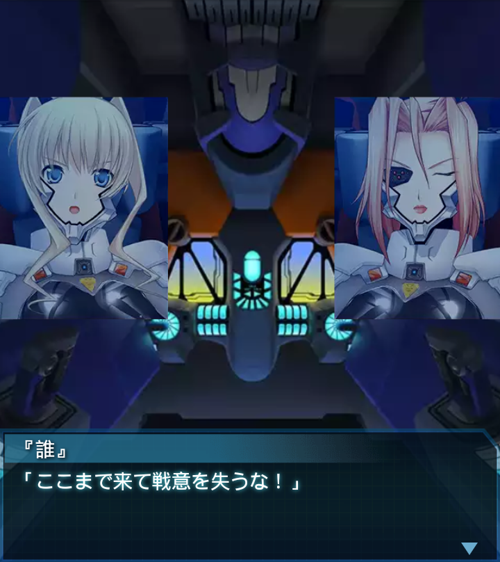
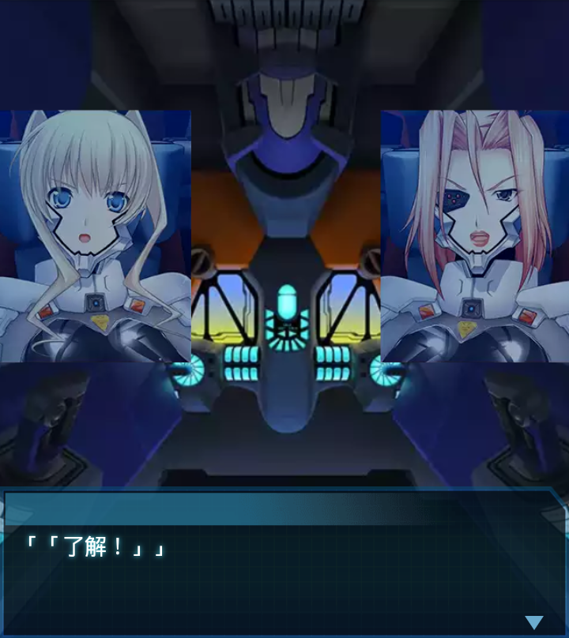

中東・アンバールハイヴ4
イルフリーデ
「アンバールハイヴ、撤退経路の
確保に成功、進路上のＢＥＴＡは
ほぼ殲滅しました！」
ブリギッテ
「作戦もいよいよ大詰めと言った
所か。ローテ中隊、空を拝めた
からと油断はするなよ！」
イルフリーデ
「了解、周囲は以前ＢＥＴＡが多数
存在しています！各部隊の皆さん、
警戒を厳にして下さい！」
ブリギッテ
「後方支援の欧州派遣軍も合流し、
撤退経路の確保も万全だな。
ジーク様もお喜びになるだろう」
イルフリーデ
「ジークリンデ様には、私とヘルガ
そして大尉は、今夜、夕食を御馳走
する事になっていますね」
ブリギッテ
「…いきなり何の話だ。それより…
私は招かれていないのだが……」
イルフリーデ
「えっ！？スコアで負けたら夕食を
奢るという賭けをしていたので。
中尉もいらっしゃいます…？」
ブリギッテ
「まあ…部下だけに出費を強いる
のはいささか問題があるからな――
……なんだあのデカ物は」
イルフリーデ
「友軍３機のシグナルロスト！全長
６０ｍオーバー、要塞級です！弾薬
推進剤共に僅かというのに…」

『誰』
「ここまで来て戦意を失うな！」
イルフリーデ
「…大尉！了解ですっ！ハイヴ内に
残っている友軍機とあんな化物を
遭遇させるわけにはいかない！」
ブリギッテ
「その意気だ！ジーク様がお戻りに
なられる前に、奴を始末する！」
『誰』
「まずは要塞級に接近するため
進路上のＢＥＴＡを駆逐する！
ここまで来て死ぬなよ！」

「「了解！」」
『誰』
「く……ローテと俺達を除き、
ほぼ全滅か…！要塞級め！機体、
衛士共に疲弊している時に…」
『誰』
「ハイヴ戦を終えて生還の喜びに
浸たる虚を突く禍々しい巨体。戦意
を失っているのか皆、動きが…」
『誰』
「…クソッ、ここまでか…！」
龍浪響
「諦めるんじゃねえ！！！」
『誰』
「援軍…！？ハイヴ内から！？
ウォードッグ中隊か！」
龍浪響
「散々、世話だけしておいて、
借りを返す前にくたばっちまうとか
悪い冗談ですよ、大尉！」
千堂柚香
「中尉の言うとおりです。命の
恩人達に恩を返す前に死なれては
困ります」
『誰』
「無事だったか、千堂少尉…」
千堂柚香
「お陰様で無事発掘されました！」
『誰』
「発掘って……。
くく…ははは。そうだな。諦めたら
そこで何もかも終わりだ」
龍浪響
「それじゃ、『誰』大尉。
あのデカ物、黙らせて
やりましょう！！」
『誰』
「了解ッ！！」